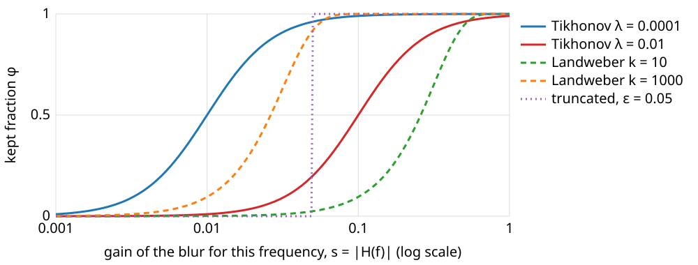

Every restoration of the last unit had one number to choose. This unit is the general lesson behind them, taught once for the whole course.
The pattern: fit the data + λ · look like what we expect.
What the penalty can say: small, smooth, never negative, piecewise constant, sparse.
Choosing λ: the discrepancy principle, the L-curve, a test image with known truth.
Filter factors: every linear method keeps a fraction of each frequency.
Stopping an iteration early regularises too: the number of iterations plays the role of λ.
A probabilistic reading: the most probable object.
Slides titled The math give the formulas and proofs; the ideas are complete without them.
The pattern
Every restoration so far minimised
\underbrace{\text{misfit}(x, \text{data})}_{\text{how the image was made}} \;+\; \lambda \cdot \underbrace{\text{penalty}(x)}_{\text{what we know about the object}}
The data term encodes the forward model (blur) and the noise: it is small when the blurred estimate looks like the data.
The penalty encodes prior knowledge: it is small for objects we find plausible.
λ says how much we trust each: λ = 0 trusts only the data (the inverse filter); λ → ∞ only the prior.
The same pattern returns on the graph-cut day (each pixel takes one of two labels instead of a grey value), in tomography and in the electives.
What the penalty can say
Penalty
prefers
keeps
destroys
energy\sum x_i^2
small values
shapes
the mean (shrinks everything)
roughness\sum (x_{i-1} - 2x_i + x_{i+1})^2
smooth
ramps, the mean
steps (rounded), narrow peaks
non-negativityx \ge 0
photons are not negative
everything positive
the dips and ripples below 0
total variation\sum \lvert x_{i+1} - x_i\rvert
piecewise constant
sharp steps
ramps (staircases), small bright spots (shrunk)
sparsity in a basis
few non-zero coefficients
what the basis describes well
what it does not
Non-negativity is a constraint, not a penalty: forbidden, not just expensive.
TV pays for the size of a jump, not its square, so one sharp step costs no more than a gentle ramp of the same height (owner: the Ising/MRF elective). Sparsity: the wavelets elective.
The prior is a modelling choice. Where the data are weak, it is the prior you see.
Try it: what the penalty does
Choosing λ
The question every student asks. Four answers:
By eye: common, not reproducible. Fine for a figure, not for a measurement.
Discrepancy principle: the residual (data − blurred estimate) should be as large as the noise, not smaller. A smaller residual means the estimate is fitting the noise. Needs the noise level σn (camera noise unit: offset frames, flat regions).
L-curve: plot the size of the residual against the size of the penalty for many λ, both on log axes. Pick the corner. Needs no σn, but the corner can be vague.
Known truth: a test image (beads, phantom) with the same microscope and noise; choose λ with the smallest error. The honest benchmark, if the test resembles the real data.
One line: generalised cross-validation (leave each pixel out, predict it) also exists; not taught here.
The discrepancy principle in numbers
An image of 256 × 256 pixels with noise σn = 2 grey levels.
The noise alone has root-mean-square 2, so the residual of a good estimate should have RMS ≈ 2: squared norm \approx 65\,536 \times 4 = 262\,144.
λ too small: the estimate follows the noise and the RMS residual drops below 2.
λ too large: the estimate is too smooth to explain the data, and the residual grows above 2, now containing image structure.
The residual grows steadily with λ, so there is exactly one λ with RMS residual = σn.
In the demo (1D, σn = 0.02): RMS residual 0.0151 at λ = 10⁻⁶, 0.0180 at 0.1, 0.0189 at 1, 0.0231 at 10: the discrepancy λ is about 2.6.
The L-curve
For each λ compute the residual norm \rho = \|A\hat x_\lambda - g\| and the penalty \eta = \|D\hat x_\lambda\|; plot \eta against \rho on log–log axes.
Small λ (top left): the penalty explodes (noise is fitted) for almost no gain in fit: a vertical branch.
Large λ (bottom right): the fit gets worse for almost no gain in smoothness: a horizontal branch.
The corner between them balances the two. Here: the point closest to the lower left corner of the plot (after scaling both log axes to the same length).
The math: choosing λ
Discrepancy principle (Morozov): choose λ with \|A\hat{\mathbf x}_\lambda - \mathbf y\|^2 = N\sigma_n^2 (N data values). For Tikhonov, in the SVD basis (next slides) the residual is \sum_i \big(\tfrac{\lambda}{s_i^2 + \lambda}\big)^2 (\mathbf u_i^\top\mathbf y)^2, which increases with λ: one root, found by bisection on \log\lambda.
L-curve (Hansen): the parametric curve \big(\log\|A\hat{\mathbf x}_\lambda - \mathbf y\|,\ \log\|D\hat{\mathbf x}_\lambda\|\big). Its corner is defined as the point of maximal curvature
\kappa = \frac{\rho'\eta'' - \rho''\eta'}{(\rho'^2 + \eta'^2)^{3/2}} \quad (\text{derivatives of the logs with respect to } \log\lambda).
On sampled curves from iterative solvers (TV, non-negativity), which wiggle, the curvature is unreliable; the point nearest the lower-left corner of the normalised plot is a robust stand-in (used in the demo).
Try it: choosing λ
Filter factors
Every linear restoration keeps a fraction φ of each frequency (or, in general, of each singular direction of the blur), then divides by the blur’s gain s there.

The kept fraction φ against the blur’s gain s at that frequency, for Tikhonov (two λ), Landweber (two iteration counts, next slides) and the truncated inverse.
Inverse: φ = 1 everywhere. Truncated: φ = 1 or 0. Tikhonov: \varphi = s^2/(s^2 + \lambda), a smooth step at s^2 \approx \lambda.
Regularisation = choosing this curve. Numbers, λ = 0.01: s = 1 keeps 0.99, s = 0.5 keeps 0.96, s = 0.1 keeps 0.5.
The math: filter factors
Write the blur by its singular value decomposition A = U\Sigma V^\top (singular values s_i, singular vectors \mathbf u_i, \mathbf v_i). The inverse is \mathbf x = \sum_i \frac{\mathbf u_i^\top\mathbf y}{s_i}\mathbf v_i. Any linear restoration is
With \mathbf y = A\mathbf x + \mathbf n, term i carries the noise \varphi_i\,n_i/s_i (n_i = \mathbf u_i^\top\mathbf n): small s_i amplifies, small \varphi_i suppresses.
For a circular blur the \mathbf v_i are the Fourier waves and s_i = |H(f)|: filter factors are gains per frequency, as in the last unit.
Tikhonov’s \varphi follows from the normal equations: (A^\top A + \lambda I)\mathbf x = A^\top\mathbf y gives, in the SVD basis, (s_i^2 + \lambda)\,x_i = s_i\,(\mathbf u_i^\top\mathbf y).
Stopping early regularises
An iterative method that starts from a flat (zero) image and improves the fit step by step:
picks up the strong frequencies (large s) first, the weak ones (small s, noisy) last;
after k steps it acts like a filter whose roll-off moves to smaller s as k grows: the number of iterations plays the role of λ (roughly \lambda \approx 1/k);
the error against the truth first falls, then rises again (semi-convergence), while the data fit keeps improving.
The simplest such method, Landweber: blur the estimate, subtract it from the data, blur the difference back (with the mirrored PSF), add it to the estimate. Filter factors 1 - (1 - s^2)^k:
s = 0.5: k = 1, 4, 16 keep 0.25, 0.68, 0.99.
s = 0.1: k = 16 keeps 0.15; k = 100 keeps 0.63. Weak frequencies need many iterations, which is why stopping early regularises.
The math: early stopping
Landweber: \mathbf x_{k+1} = \mathbf x_k + \omega A^\top(\mathbf y - A\mathbf x_k), \mathbf x_0 = 0, 0 < \omega < 2/s_{\max}^2. In the SVD basis each component evolves alone: with c_i = \mathbf u_i^\top\mathbf y,
So \varphi_i^{(k)} = 1 - (1 - \omega s_i^2)^k. For small \omega s_i^2, (1 - \omega s_i^2)^k \approx e^{-k\omega s_i^2}, which falls from 1 to 0 around s_i^2 \approx 1/(k\omega): like Tikhonov with \lambda \approx 1/(\omega k).
Try it: iterations as λ
A probabilistic reading
Data term = how likely are these data if this were the object (the noise model: Gaussian noise gives squared differences).
Penalty = how likely is this object before we look (the prior: smooth objects are likely, wild ones unlikely).
Minimising data term + λ · penalty finds the most probable object given both (the maximum a posteriori, MAP, estimate).
λ is the ratio of how much we trust the data to how much we trust the prior: more noise → larger λ.
Modern deep learning (the last core day) replaces the hand-made prior by one learned from many images.
The math: MAP
Gaussian noise \mathbf y = A\mathbf x + \mathbf n, \mathbf n \sim \mathcal N(0, \sigma_n^2 I), and a Gaussian prior D\mathbf x \sim \mathcal N(0, \tau^2 I):
-\log p(\mathbf x \mid \mathbf y) = \frac{1}{2\sigma_n^2}\|A\mathbf x - \mathbf y\|^2 + \frac{1}{2\tau^2}\|D\mathbf x\|^2 + \text{const}.
Multiplying by 2\sigma_n^2: Tikhonov with \lambda = \sigma_n^2/\tau^2. More noise or a tighter prior → larger λ.
A Laplace prior p \propto e^{-|t|/b} on the differences gives the total-variation penalty; on coefficients in a basis, the \ell^1 (sparsity) penalty.
Poisson noise instead of Gaussian changes the data term to \sum_i (A\mathbf x)_i - y_i\log(A\mathbf x)_i: the next unit.
Summary
Restoration = data term + λ · penalty; the penalty is what we know about the object, λ how much we trust it.
Penalties: energy (shrinks the mean), roughness (smooth, keeps the mean), non-negativity (a constraint), TV (keeps steps, staircases ramps, shrinks spots), sparsity.
Choosing λ: discrepancy (residual = noise level, needs σn, assumes white noise), L-curve corner (no σn, can be vague), known truth on a test image.
Filter factors: every linear method keeps a fraction \varphi of each frequency; Tikhonov s^2/(s^2 + \lambda).
Early stopping regularises: Landweber’s factors 1 - (1 - s^2)^k; the error is U-shaped in k (semi-convergence).